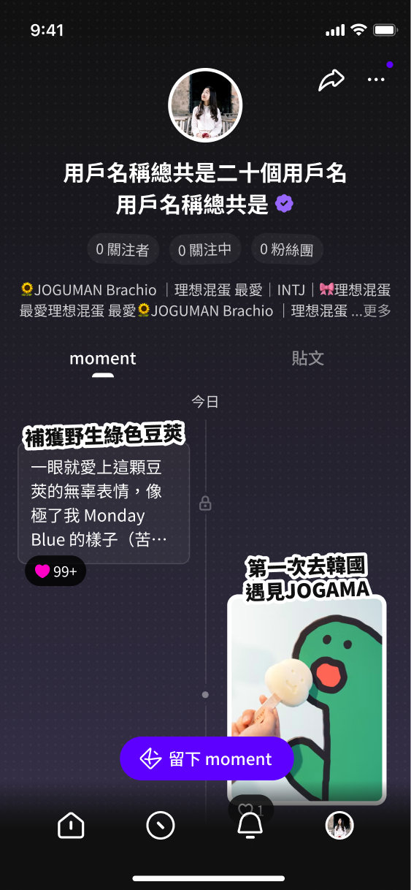

Product Design · 2024
Moment
讓追星回憶，變成可收藏的情感資產。

讓追星回憶，變成可收藏的情感資產。
從工作坊發掘粉絲情感需求，
主導設計追星記錄工具 Moment，上線後互動率提升 33%。
hidol 在策略轉型後，從服務 IP 端轉向以粉絲體驗為核心。但「粉絲體驗」這件事模糊得難以直接設計——我們從用戶問卷裡找到了一個值得探索的問題：
粉絲收藏的不是票根，
而是那段情緒。
Moment 是這個新方向落地的第一個功能——它的任務，就是回答這個問題。
「追星的投入成果」是什麼？追韓團跟台灣明星的答案會一樣嗎？這個問題大得難以直接設計。我們決定先不急著給答案——把公司裡真正熱愛追星的人找來，一起探索。

每個人心裡都有一個
只有自己才懂的追星邏輯。


工作坊結束後，從滿桌便利貼開始抽絲剝繭——找原因、找機會，再和 PM 團隊對焦目的、排定優先級，完成提案。
每個功能都要先問一個問題——這是核心，還是加分？
基於三個洞察，我定下三條設計原則作為所有決策的依據。

以縱向時間軸讓每一筆紀錄有形可見。加入點點背景讓空狀態依然有溫度感，時間軸格式讓 Moment 與既有貼文各自有位置，不相互競爭。

MVP 階段設計刻意克制，先確認用戶對「紀錄」本身有需求。
改版後觸發「由外往內展開亮起」動效——像舞台燈亮起，有揭幕感。


開心是輕快彈出、燃是爆發擴散、難過是緩慢淡入。
情緒互動機制上線後，外層按讚 / 留言互動率提升約 33%——讓情緒真的有「感覺」，不只是換個顏色。
時間軸讓 Moment 與既有貼文各自有位置，不相互競爭——保留既有行為，也為紀錄留出清晰的生長空間。點點背景讓空狀態依然有溫度感。
方案二·大面積版：以小空間嵌入個人頁，視覺優先序不夠清晰，用戶容易略過。
方案三·筆記版：每筆紀錄自由漂浮，存在感強，但初次進入認知負擔較高。
上線初期以回訪與留存為目標，設計刻意克制——先確認用戶對「紀錄」本身有需求，再投入更多視覺資源。
豐富的 Moment 在首頁展示更多，觸發「由外往內展開亮起」動效——像舞台燈亮起，有揭幕感。點點背景貫穿個人頁與首頁，同一套設計語彙。
怎麼讓情緒同時保有輔助感，又有足夠的存在感？
我們以文字、圖案、氛圍三種方向快速做原型，進行走廊測試。
自繪表情搭配氛圍色——表情最直接傳達情緒，氛圍色無聲染整體畫面，外層特別控制顯示程度，不全盤托出，保持首頁呼吸感。
工作坊最大的價值，不是找到答案——
而是讓團隊開始問對問題。
在那次工作坊之前，我們以為在設計「記錄功能」。
工作坊之後，我們才意識到，真正在設計的是「讓情緒有地方落腳」的體驗。這個視角轉移，決定了 Moment 後來所有設計決策的方向。